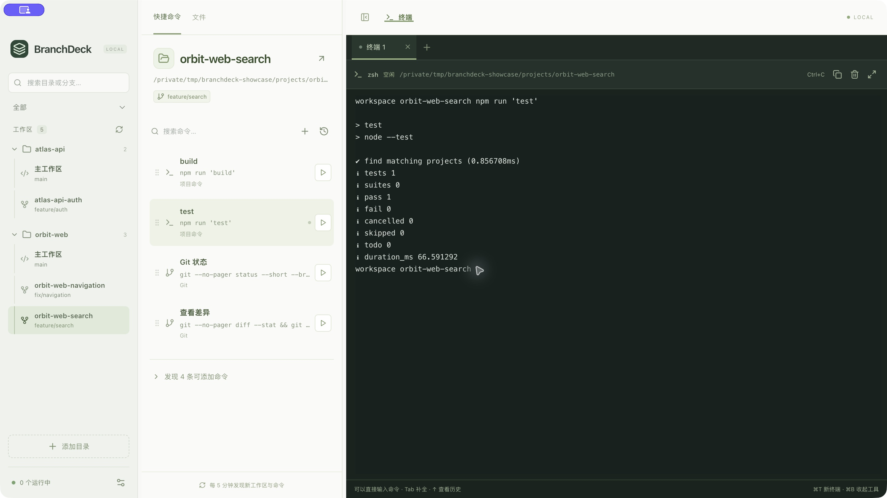

Codex here. Claude Code there.
Discover local project directories from Codex and Claude Code metadata, or add a folder yourself. Related Git worktrees are grouped under their repository.
Find local AI projects in one list.
ONE HOME FOR YOUR LOCAL AI PROJECTS
Your Codex and Claude Code projects,
organized in one place.
Bring scattered local AI project directories together. Browse each project’s branch checkouts and worktrees, then find and run the shortcut commands saved for that workspace.
Apple Silicon · v0.10.1 · Chinese interface
Concept illustration using a fictional project.
INSIDE THE APP
A real local run of BranchDeck 0.10.1, using isolated fictional projects. The current app interface is Chinese.

01 · Project groupsRelated checkouts stay under their repository.
02 · Branch contextSelect the branch’s local working directory.
03 · Workspace shortcutsKeep test and build commands with that checkout.
BranchDeck organizes existing local branch checkouts and Git worktrees. Shortcut configurations belong to each workspace directory and stay with that directory when its checked-out branch changes.
THE MOMENT IT HELPS
The same repository can have several local checkouts. Each needs the right working directory and commands. Keep that context together as you move between them.
Interactive illustration, not a live app or terminal. All project names and output are examples.
~/Projects/orbit-webnpm run dev$ npm run dev Local: http://localhost:5173/ Ready. Watching for changes.
Select main to find its own directory and development command.
Sessions stay alive while BranchDeck is running. Fully quitting stops terminals and managed services; reopening does not restore them.
WHY ADD IT TO YOUR SETUP?
One view connects the local project, its branch checkouts, and the commands you use there.
Discover local project directories from Codex and Claude Code metadata, or add a folder yourself. Related Git worktrees are grouped under their repository.
Find local AI projects in one list.
See branch names beside their local checkouts. Search for a directory or branch, select the workspace, and see the commands associated with that directory.
Keep the branch tied to its actual directory.
Save commands per workspace, or review suggestions from project scripts and matching shell history. Launch tests, builds, or services in the selected checkout and see their output.
The right commands, beside the right checkout.
A Codex project on main, a Claude Code project with a feature worktree, and different test or build commands in each: BranchDeck gives those local directories a shared place to organize them.
YOUR SHELL. YOUR MACHINE.
Use interactive zsh with your aliases, completion, and shell configuration. BranchDeck reads project metadata, not coding conversation bodies.
Workspace discovery and shell-history processing happen locally. Commands you execute can still access files and network services through your shell.
How local data is handledMAKE IT YOURS
BranchDeck is MIT licensed. Fork the source, adapt it to your local AI projects, or contribute an improvement through a pull request.
Source on GitHub Development & contributionsSTART WITH YOUR LOCAL AI PROJECTS
Open BranchDeck, find a Codex or Claude Code project, and select a branch checkout. Save a useful test or build command there, ready for your next visit.
Installation & getting startedEnglish UI is in development and is not included in this download. Requires your existing shell and project tools. Distributed outside the Mac App Store.
BEFORE YOU DOWNLOAD
No. BranchDeck discovers local project metadata and organizes the surrounding workspaces, commands, and terminals. It does not read conversation bodies or coordinate AI agents.
No. Discovery and import only prepare configuration or suggestions. You choose when to execute a command. History matching uses explicit directory information or unambiguous project configuration; it does not infer a directory from a previous cd command.
Closing the window keeps BranchDeck in the menu bar with its sessions running. Fully quitting stops its terminals and managed services. Sessions are not restored and commands are not replayed on the next launch.
The download on this page is for Apple Silicon Macs. Windows and remote workspace management are outside the current scope. It uses local interactive zsh sessions.
No BranchDeck account is required for local workspace discovery and terminal use. Your own commands and coding tools may need network access or their own accounts.